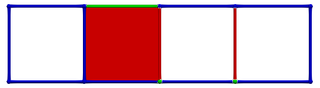
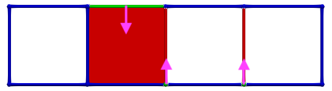
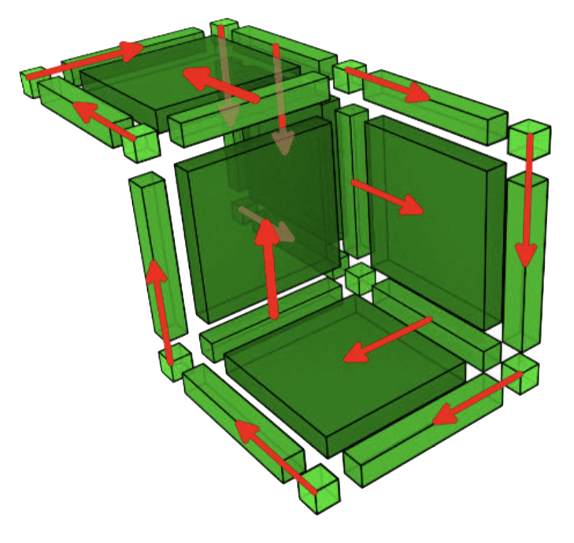
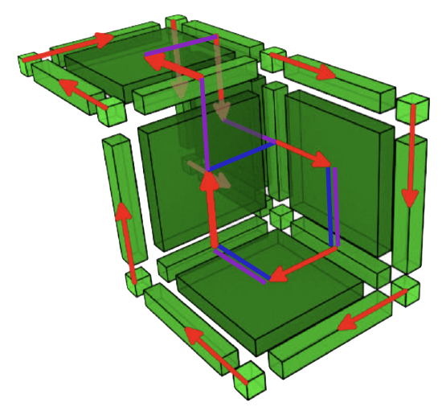
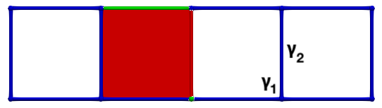

|
CGAL 6.2 - Homological Discrete Vector Fields
|
Loading...
Searching...
No Matches
|
CGAL 6.2 - Homological Discrete Vector Fields
|
Algebraic topology, introduced more than a century ago, studies topological spaces using algebraic tools derived from them (e.g. groups). Since the 70's and 80's, pioneering works (MacLane, Hilton, Munkres...) paved the way to computational homology, which studies the "holes" of an object. In particular, Munkres introduced an algorithm computing Betti numbers based on the pseudo-diagonalization of boundary matrices (Smith Normal Form).
In the 90's, persistent homology emerged independently through the work of H. Edelsbrunner et al. (North Carolina), P. Frosini et al. (Bologna), and V. Robins (Colorado), extending the study of homology to sequences of complexes (filtrations). This later theory proved to have a wide range of applications in topological data analysis and hence quickly developed and spread in the scientific community. In parallel, in the late 80's, R. Forman defined a discrete version of Morse theory for CW-complexes, while F. Sergeraert introduced effective homology theory.
In [AGL, 2017], A. Gonzalez-Lorenzo et al. defined the homological discrete vector field (which we refer to as HDVF in the present package), a combinatorial object that generalizes previous approaches. Precisely, HDVFs combine discrete Morse and effective homology theory and fully encode homology information (homology groups decomposition, Betti numbers, homology generators) for cellular complexes. HDVFs encompass discrete Morse theory, effective homology and Smith Normal form, and: persistent homology can be computed with HDVFs (see [AGL, 2016]), relative homology and Alexander duality (see [AGL, 2025]).
Figure 94.1 HDVF on a twirl model. Left: a perfect HDVF over the model; Middle: Homology generators associated to this HDVF; Right: Corresponding cohomology generators.
Unlike other main stream state of art approaches and librairies (largely based on persistent homology), HDVFs provide a framework for "geometric" homology and cohomology computation, where holes are not only enumerated, but also "localized" (through homology, cohomology generators, annotations...).
The HDVF package is dedicated to homology and cohomology computation for discrete objects and provides tools to compute:
Homology and cohomology are well know topological invariants which accounts for the holes of an object using commutative groups built from the object. In Mathematics, homology and cohomology can be defined for general Hausdorff topological spaces; we speak then about "singular homology and cohomology". However, such a general definition is not computable and thus, homology/cohomology computation requires a discretization of spaces into cells of various dimensions. Such a discretization is called a complex:
Actually, a set of cells is called a complex \(K\) when:
Figure 94.2 Illustration of complexes. Left: a simplicial complex of dimension 3; Right: A cubical complex of dimension 3.
In order to compute homology and cohomology, algebraic objects are built from such "geometric" complexes, namely chain complexes.
In order to define this algebraic structure, one first need to chose a ring of coefficients \(A\) ( \(A\) is often taken to be \(Z\) or a \(\mathbb Z/p\mathbb Z\) field).
Given a complex \(K\) of dimension \(d\), a chain complex \(C\) is:
\[C = \cdots C_{q+1} \xrightarrow{\partial_{q+1}} C_q \xrightarrow{\partial_{q}} C_{q-1} \xrightarrow{\partial_{q-1}} \cdots \to C_1 \xrightarrow{\partial_1} C_0 \xrightarrow{\partial_0 = 0} 0\]
a sequence of morphisms between chain groups, called boundary morphisms \(\partial_q\,:\, C_q\to C_{q-1}\) for any \(0\leqslant q \leqslant d\), "mimicking" algebraically the geometric boundary and satisfying
\[\partial_q\partial_{q+1} = 0\]
Coming back to the example of Figure 94.3, as we will see in section Simplicial chain complexes, the boundary of the edge \(e_{45}\) is the 0-chain \(v_5-v_4\) (ordering is given by vertices indices). Hence, on easily gets that \(\partial_1(\gamma_1)=0\) and \(\partial_1(\gamma_2)=v_8-v_4\), which is a very intuitive result.
Figure 94.3 Examples of chains representation in a simplicial complex (with \(A = \mathbb Z\)). Pink: representation the 1-chain (of edges) \(\gamma_1 = e_{24}+e_{46}-e_{26}\); Blue: representation of the 1-chain \(\gamma_2 = e_{45}+e_{56}+e_{67}+e_{78}\).
The definition of the boundary operator depends on the underlying complex, it is detailed in next sections for simplicial and cubical complexes respectively.
Notation
Given a chain \(\gamma\in C_q\) and \(\sigma\) a \(q\)-cell, we denote by \(\langle\gamma,\sigma\rangle\) the coefficient of \(\sigma\) in \(\gamma\in C_q\).
An abstract simplicial complex of dimension \(d\) is built from:
std::size_t (cells of dimension 0 or 0-simplices)A geometric simplicial complex equips vertices with coordinates in \(\mathbb R^q\) so that \(q\)-simplices are convex hulls of \(q+1\) points.
Given a simplicial complex (abstract or geometric) \(K\), the associated chain complex \((C,\partial)\), called a simplicial chain complex is defined as follows:
\[\partial_q : \begin{array}{rcl} C_q & \to & C_{q-1} \\ \langle v_0,\ldots,v_{q}\rangle & \mapsto & \sum_{i=0}^q (-1)^i\cdot \langle v_0,\ldots,\hat{v_i}, \ldots, v_{q}\rangle \\ \end{array} \]
where \(\hat{v_i}\) means that the \(i\)-th vertex has been discarded.
For instance, in our previous example:
A cubical complex of dimension \(d\) is a set of cells defined as cartesian products:
\[\sigma = [n_1,n_1+\delta_1]\times\cdots \times [n_d,n_d+\delta_d]\]
with \(n_i\in \mathbb N\) and \(\delta_i\in\{0,1\}\) for \(i=1\ldots d\). The dimension of such a cell is \(\sum_{i=1}^d \delta_i\). As stated in previous section, a complex is closed under the "face" operation (if a cell belongs to the complex, so do its faces).
Khalimsky coordinates** associate to each cell, whatever its dimension, a unique coordinate in \(\mathbb N^d\) defined as:
\[\mathrm{khal}(\sigma) = (2 n_1+\delta_1,\ldots, 2 n_d+\delta_d)\]
The dimension of a cell in this coordinate system is thus the number of odd coordinates.
Figure 94.4 A cubical complex of dimension 3.
For instance, in the example above:
Given a cubical complex \(K\), the associated chain complex \((C,\partial)\), called a cubical chain complex is defined as follows:
\[\partial_q(x_1,\ldots,x_d) = \sum_{\substack{i=1\\i\text{ odd}}}^d (-1)^{i+1}\Big((x_1,\ldots, x_i+1,\ldots, x_d) - (x_1,\ldots, x_i-1,\ldots, x_d)\Big)\]
For instance, in the example above:
In the "mathematical world", singular cohomology is defined on dual groups \(C^q = C_q^* = \mathrm{Hom}(C_q,A)\) with coboundary morphisms: \(\partial^q\,:\, C^q \to C^{q+1} = \partial_q^*\).
However in our discrete setting of finite complexes, a space and its dual can be identified. Hence cohomology can be defined in a more intuitive way:
\[C^* = \cdots C^{q+1} \xleftarrow{\partial^{q}} C^q \xleftarrow{\partial^{q-1}} C^{q-1} \leftarrow \cdots \leftarrow C^2 \xleftarrow{\partial^1} C^1 \xleftarrow{\partial^0} C^0\]
\[\partial^q\partial^{q-1} = 0\]
The following figure illustrates the coboundary morphism
Figure 94.5 Illustration of the coboundary morphism (with \(A = \mathbb Z\)) Pink: coboundary of vertex \(v_6\) ( \(\partial^0(v_6) = e_{26} + e_{46}+e_{56} - e_{67} - e_{68}\)); Blue: coboundary of edge \(e_{24}\) ( \(\partial^1(e_{24} ) = f_{246} - f_{234}\)).
Homology is a topological invariant characterizing the holes of an object of various dimension. What is a hole?
Figure 94.6 Illustration of the holes of a double torus. Black: 1 connected component (dimension 0); Red: 4 holes of dimension 1; Blue 1 cavity of dimension 2.
Let us now come back to our simplicial complex example:
Figure 94.7 Cycles on a simplicial complex. Blue: this cycle is the boundary of \(f_{234}+f_{246}\); Pink: this cycle is not a boundary.
This example suggests that holes are delineated by cycles which are not a boundaries:
\[Z_q(C) = \ker(\partial_q) \]
\[B_q(C) = \mathrm{Im}(\partial_{q+1}) \]
\[H_q(C) = Z_q(C)/B_q(C) \]
For finite complexes, these groups are finitely generated and we have the following decomposition (theorem of decomposition of finitely generated groups):
\[H_q(C) = A^{\beta_q}\oplus A/\lambda_1A\oplus \cdots \oplus A/\lambda_k A \]
where:
Let us assume homology groups have no torsion; homology can be computed "at different levels":
Most libraries focus on persistent homology computation for topological data analysis (see section Persistent homology), which is a "level 1" homology computation. The HDVF package is dedicated to a "level 2" homology computation, which is computationally more complex but provides "geometric" informations about holes (generators, annotations...).
Starting from a cochain complex:
\[C^* = \cdots C^{q+1} \xleftarrow{\partial^{q}} C^q \xleftarrow{\partial^{q-1}} C^{q-1} \leftarrow \cdots \leftarrow C^2 \xleftarrow{\partial^1} C^1 \xleftarrow{\partial^0} C^0\]
one can define:
\[Z^q(C^*) = \ker(\partial^q) \]
\[B^q(C^*) = \mathrm{Im}(\partial^{q-1}) \]
\[H^q(C^*) = Z^q(C^*)/B^q(C^*) \]
Figure 94.8 Illustration of homology and cohomology generators for a simple 2D cubical complex \(C\) (computed with HDVFs). Left: both generators of \(H_1(C)\); Middle, right: both cohomology generators \(H^1(C)\) (for convenience, the dual of cohomology generators has been displayed with bulleted pink lines).
Figure 94.9 Cofaces representation of cohomology generators.
Figure Figure 94.8 and Figure 94.9 illustrate homology and cohomology generators in a simple cubical complex. Actually:
Therefore homology and cohomology provide isomorphic (and dual) results. Actually, the following proposition holds in finite dimension:
\[H^q(C^*) \sim H_q(C)\]
First results on the computation of discrete homology and cohomology date back to the 80's (see for instance [Munkres]). They are based on a diagonalisation of boundary matrices (called Smith Normal form). Nowadays, computational (co)homology approaches can be classified into three branches illustrated in figure Figure 94.10.
Figure 94.10 Overview of approaches in computational homology. HDVFs are in-between discrete Morse theory and effective homology (and they encompass persistent homology, relative homology and tri-partitions).
Effective homology considers homology computations from a categorical perspective ; its main results are theorems building functors providing a computation of homology for infinite spaces (locally effective spaces) starting from finite ones (effective spaces).
Among the tools of effective homology, reductions characterise how to map a (large) chain complex onto a (small) one with isomorphic homology groups. Formally, a reduction from a chain complex \(C\) to a chain complex \(C'\) is a triple of graded maps \((f,g,h)\):
\[\begin{array}{cccccc} \cdots & C_{q+1} & \substack{\xrightarrow{\partial_{q+1}}\\ \xleftarrow[h_{q}]{}} & C_{q} & \substack{\xrightarrow{\partial_{q}}\\ \xleftarrow[h_{q-1}]{}} & \cdots \\ & f_{q+1}\Big\downarrow \Big\uparrow g_{q+1} & & f_{q}\Big\downarrow \Big\uparrow g_{q} & & \\ \cdots & C'_{q+1} & \xrightarrow{\partial'_{q+1}} & C'_{q} & \xrightarrow{\partial'_{q}} & \cdots \\ \end{array} \]
such that:
\(h_{q+1} h_q = 0\), \(f_{q+1} h_{q} = 0\) and \(h_{q} g_q = 0\) for any \(q\)
\(C'\) is called the reduced complex and \(\partial'\) the reduced boundary.
Under these assumptions, the homology and cohomology groups of \(C\) and \(C'\) are isomorphic.
A reduction is perfect when the reduced boundary is null; then for any \(q\):
\[H_q(C) \sim g(C'_q)\]
in other words, homology groups are isomorphic to the image of the reduced complex by \(g\),
\[H^q(C) \sim f^*(C'_q)\]
and cohomology groups are isomorphic to the image of the reduced complex by \(f^*\).
Discrete Morse theory was introduced by Forman in the 90's as a combinatorial approach for homology computation directly inspired by Morse theory (on compact manifolds). He showed that in the discrete context, Morse functions are better defined through their gradient: a vector field defined over the complex connecting cells and one of their co-faces. In this context, gradients of Morse functions can be easily characterized by acyclicity conditions.
More precisely, given a complex \(K\), a discrete gradient vector field (called DGVF here after) can be built as follows:
This section presents a brief introduction to HDVFs, see [AGL, 2016] for more details.
HDVFs are an "in-between" theory:
Let \(K\) be a complex (simplicial, cubical...) and let \((\mathscr C, \partial)\) be its associated chain complex.
Notation** Starting from now on, we will use \(\mathscr C\) for chain complexes and \(C\) for critical cells.
Formally a HDVF \(X=(P,S,C)\) is a partition of the cells of \(K\):
\[K = P\cup S\cup C\]
with \(P\) primary cells, \(S\) secondary cells and \(C\) critical cells, such that the sub-matrix:
\[\partial (S)|_P\text{ is invertible.} \]
where \(\partial (S)|_P\) means that the matrix of \(\partial\) is restricted to columns of secondary cells and rows of primary cells.
As stated earlier, this definition is both combinatorial (partition of cells) and algebraic (invertibility of a sub-matrix) but it cannot be simplified or reduced to either of these approaches.
Given such an HDVF \(X=(P,S,C)\), we can define the following associated reduction \((f,g,h)\):
\[\begin{array}{cccccc} \cdots & \mathscr C_{q+1} & \substack{\xrightarrow{\partial_{q+1}}\\ \xleftarrow[h_{q}]{}} & \mathscr C_{q} & \substack{\xrightarrow{\partial_{q}}\\ \xleftarrow[h_{q-1}]{}} & \cdots \\ & f_{q+1}\Big\downarrow \Big\uparrow g_{q+1} & & f_{q}\Big\downarrow \Big\uparrow g_{q} & & \\ \cdots & C_{q+1} & \xrightarrow{\mathrm d_{q+1}} & C_{q} & \xrightarrow{\mathrm d_{q}} & \cdots \\ \end{array} \]
\(\mathrm d\) is the reduced boundary (over critical cells) and the reduction is defined as follows:
\[\begin{array}{c} \ \ \ \ \ \ \ \ \ \ P_q \ \ \ \ S_q \ \ \ \ C_q \\ \begin{array}{c} P_{q+1} \\ S_{q+1} \\ C_{q+1} \\ \end{array} \begin{array}{|c|c|c|} \hline 0 & 0 & 0 \\ \hline H_q & 0 & 0 \\ \hline 0 & 0 & 0 \\ \hline \end{array} \end{array} \]
with\[H_q = (\partial (S_{q+1})|_{P_q})^{-1}\]
.\[\begin{array}{c} \ \ \ \ \ \ P_q \ \ \ \ S_q \ \ \ \ C_q \\ \begin{array}{c} C_q \\ \end{array} \begin{array}{|c|c|c|} \hline F_q & 0 & \mathrm{Id} \\ \hline \end{array} \end{array} \]
with\[ F_q = - \partial(S_{q+1})|_{C_q}\cdot H_q\]
\[\begin{array}{c} \ \ \ \ \ \ C_q \\ \begin{array}{c} P_q \\ S_q \\ C_q \\ \end{array} \begin{array}{|c|} \hline 0 \\ \hline G_q \\ \hline \mathrm{Id} \\ \hline \end{array} \end{array} \]
with\[ G_q = - H_{q-1} \cdot \partial(C_{q})|_{P_{q-1}}\]
\[\begin{array}{c} \ \ \ \ \ \ C_q \\ \begin{array}{c} C_{q-1} \\ \end{array} \begin{array}{|c|} \hline DD_q \\ \hline \end{array} \end{array} \]
with\[ D_q = \partial(C_{q})|_{C_{q-1}} + F_{q} \cdot \partial(C_{q})|_{P_{q-1}} = \partial(C_{q})|_{C_{q-1}} + \partial(S_{q})|_{C_{q-1}} \cdot G_q \]
Therefore the HDVF "reduces" the complex to a smaller complex over critical cells.
A HDVF is called perfect when the reduced boundary is null, then for any \(q \in \{0\ldots d\}\):
Hence a perfect HDVF computes homology and provides a rich homological information.
Moreover, the reduction provides various informations on cycles and co-cycles:
\[\text{if }f(\gamma) = \sum_i \alpha_i\cdot \sigma_i,\ \ \ \sigma_i\in C_q\]
\[\text{then }\ \ \ \gamma = \sum_i \alpha_i\cdot g(\sigma_i) + \beta,\ \ \ \beta \in B_q(\mathscr C)\]
\[\text{if }g^*(\gamma) = \sum_i \alpha_i\cdot \sigma_i,\ \ \ \sigma_i\in C^q\]
\[\text{then }\ \ \ \gamma = \sum_i \alpha_i\cdot f^*(\sigma_i) + \beta,\ \ \ \beta \in B^q(\mathscr C)\]
Annotations and co-annotations provide convenient tests to decide if to cycles (resp. co-cycles) belong to the same homology (resp. cohomology) class:
Figure Figure 94.8 shows an example of HDVF together with corresponding homology and cohomology generators. In all the package, we use the following colors convention:
Let us point out that HDVFs can be represented in a "discrete Morse theory" style, with arrows (ie. a vector field) pairing a primary and a secondary cell among its co-faces (the vector field associated to a HDVF is not unique). But DGVF are a strict subset of HDVFs:
The following figures show an HDVF and an associated vector field:
 
And the following figure exhibits the vector field representation of a HDVF with a cycle (on the right, the cycle is highlighted in purple):
 
Hence this vector field is a valid HDVF ( \(\partial(S)|_P\) is invertible) but it is not a DGVF.
HDVFs can be computed using previous matrix expression; however, Aldo Gonzalez-Lorenzo has shown that several operations on HDVF can be introduced, not only to built, but also transform HDVFs.
A operation (pairing of two critical cells)
Given a HDVF \(X=(P,S,C)\), and two CRITICAL cells \(\gamma_1\in C_q\), \(\gamma_2\in C_{q+1}\)
\[ A(X) = \Big(P\cup\{\gamma_1\}, S\cup\{\gamma_2\}, C\backslash \{\gamma_1, \gamma_2\}\Big)\]
and the operation is valid (ie. produces an HDVF) if and only if:
\[ \langle \mathrm d(\gamma_2),\gamma_1\rangle \text{ is invertible}\]
Figures below illustrate this operation on a cubical chain complex: (left) an HDVF such that \((\gamma_1,\gamma_2)\) meet the A condition, (right) the HDVF obtained after \(A(\gamma_1,\gamma_2)\).

R operation (unpairing of two critical cells)
Given a HDVF \(X=(P,S,C)\), a PRIMARY cell \(\pi\in P_q\) and a SECONDARY cells \(\sigma\in S_{q+1}\)
\[ R(X) = \Big(P\backslash\{\pi\}, S\backslash\{\sigma\}, C\cup \{\pi, \sigma\}\Big)\]
and the operation is valid (ie. produces an HDVF) if and only if:
\[ \langle h(\pi),\sigma\rangle \text{ is invertible}\]
Operations A and R are inverse one another.
M operation (exchange a PRIMARY and a CRITICAL cell)
Given a HDVF \(X=(P,S,C)\), a PRIMARY cell \(\pi\in P_q\) and a CRITICAL cell \(\gamma_1\in C_{q}\)
\[ M(X) = \Big(P\backslash \{\pi\} \cup\{\gamma\}, S, C\backslash \{\gamma\}\cup \{\pi\}\Big)\]
and the operation is valid (ie. produces an HDVF) if and only if:
\[ \langle \mathrm f(\pi),\gamma\rangle \text{ is invertible}\]
The M operation modifies the homology generator associated to \(\gamma\) (while preserving is associated cohomology generator). The following figure illustrates the M operation.
Figure 94.11 M operation on a cubical complex \(K\). Left: perfect HDVF over \(K\) with cells \((\pi, \gamma)\) meeting the M operation condition (blue: homology generator associated with \(\gamma\), pink: cohomology generator associated with \(\gamma\)); Right: perfect HDVF obtained with \(M(\pi,\gamma)\) and updated generators (associated to \(\pi\) which is now critical).
W operation (exchange a SECONDARY and a CRITICAL cell)
Given a HDVF \(X=(P,S,C)\), a SECONDARY cell \(\sigma\in S_q\) and a CRITICAL cell \(\gamma_1\in C_{q}\)
\[ W(X) = \Big(P, S\backslash\{\sigma\}\cup \{\gamma\}, C\backslash \{\gamma\}\cup \{\sigma\}\Big)\]
and the operation is valid (ie. produces an HDVF) if and only if:
\[ \langle \mathrm g(\gamma),\sigma\rangle \text{ is invertible}\]
The W operation modifies the cohomology generator associated to \(\gamma\) (while preserving is associated homology generator). The following figure illustrates the W operation.
Figure 94.12 W operation on a cubical complex \(K\). Left: perfect HDVF over \(K\) with cells \((\sigma, \gamma)\) meeting the W operation condition (blue: homology generator associated with \(\gamma\), pink: cohomology generator associated with \(\gamma\)); Right: perfect HDVF obtained with \(W(\pi,\gamma)\) and updated generators (associated to \(\sigma\) which is now critical).
MW operation (exchange a PRIMARY and a SECONDARY cell)
Given a HDVF \(X=(P,S,C)\), a PRIMARY cell \(\pi\in P_q\) and a SECONDARY cell \(\sigma\in S_{q}\)
\[ MW(X) = \Big(P\backslash\{\pi\}\cup \{\sigma\}, S\backslash\{\sigma\}\cup \{\pi\}, C\Big)\]
and the operation is valid (ie. produces an HDVF) if and only if:
\[ \langle \partial h(\pi),\sigma\rangle \text{ and } \langle h\partial(\sigma),\pi\rangle\text{ are invertible}\]
The MW operation modifies both homology and cohomology generators. The following figure illustrates the W operation.
Figure 94.13 MW operation on a cubical complex \(K\). Top: perfect HDVF over \(K\) with cells \((\pi_1, \sigma_1)\) and \((\pi_2, \sigma_2)\) meeting the MW operation condition (blue: homology generators, pink: cohomology generators); Down, left: perfect HDVF obtained with \(MW(\pi_1,\sigma_1)\) and updated generators (a cohomology generator is modified); Down, right: perfect HDVF obtained with \(MW(\pi_2,\sigma_2)\) and updated generators (a homology generator is modified).
Recent works by Yann-Situ Gazull [YSG1], [YSG2] proved that (when \(A\) is a field):
These results will soon be implemented in the HDVF package.
This section describes the HDVF package implementing the theory described in previous sections.
In order to compute the homology/cohomology of a discrete object with an HDVF, the process is as follows:
AbstractChainComplex (Geometric_simplicial_chain_complex, Abstract_simplicial_chain_complex or Cubical_chain_complex)Figure 94.14 Overview of homology/cohomology computation with the HDVF package.
The ring of coefficients must be a model of the IntegralDomainWithoutDivision concept:
Zp can also be used, but Z2 is optimized for \(p=2\)) The HDVF package provides several chain complexes: Abstract_simplicial_chain_complex, Geometric_simplicial_chain_complex and Cubical_chain_complex.
In order to build such a chain complex, discrete objects are first imported into a temporary combinatorial structure storing input cells. The chain complex is then built from this intermediate structure by adding all the faces of cells and computing the corresponding boundary matrix.
Let us point out that whatever the type of chain complex, cells are indexed along each dimension; hence a cell is identified by an index and a dimension.
Abstract_simplicial_chain_complex (see section Simplicial chain complexes) are built using the Mesh_object_io intermediate class from abstract simplices (vertices have no coordinates). Therefore, such complexes are usually computed from .simp files (a simple file format enumerating on each line vertices of simplices, see section secHDVFsimpFile): Simplicial_chain_complex are also built using the Mesh_object_io intermediate structure to import mesh files (.off format): Cubical_chain_complex are built using the Cub_object_io intermediate structure by importing either simple .cub files (enumerating Khalimsky coordinates of cells, see section The CUB file format) or .pgm files..cub files enumerating Khalimsky coordinates, cells are imported and their faces are added to produce a proper complex. .pgm files (ie. for binary images or volumes), two constructions are available for cubical complexes: Figure 94.15 Primal and dual constructions of cubical chain complexes from a binary volume. Left: a 3D binary volume; Middle: PRIMAL cubical (chain) complex associated to the volume; Right: DUAL cubical (chain) complex associated to the volume).
Figure taken from [AGL, 2016].
The simp file format is a very simple text format listing, encoding simplicial complexes. It enumerates simplices line by line (described by the indices of their vertices). The file doesn't need to provide an exhaustive enumeration of simplices (with all their faces), indeed, the simplicial chain complex constructors fill them with faces. Figure Figure 94.16 illustrate the format on a simple simplicial complex.
Figure 94.16 Example of simp file. Left: a simplicial complex; Right: associated simp files describing maximal simplices.
The cub file format is a very simple text format encoding binary volumes:
The file doesn't need to provide an exhaustive enumeration of cells (with all their faces), indeed, the cubical chain complex constructors fill them with faces. Figure Figure 94.17 illustrate the format on a simple cubical complex.
Figure 94.17 Example of cub file. Left: a cubical complex; Right: associated cub files describing maximal cells.
An empty HDVF is built from a chain complex:
Several HDVF options are available:
OPT_D: fastest option - compute only the reduced boundary \(\mathrm d\) (under this option, HDVFs provide only low level homological information: Betti numbers and critical cellsOPT_F, OPT_G: compute the reduction partially (only \(f\) for cohomology generators or \(g\) for homology generators)OPT_FULL: compute the full reductionThe HDVF obtained is empty (all cells are critical). In order to compute homology/cohomology that is a perfect HDVF, the package provides two methods:
compute_perfect_hdvf() (fastest method: cells are paired using the A operation by decreasing dimension using the first valid pair)compute_rand_perfect_hdvf() (slowest: compute all valid pairs for the A operation are select one randomly)or
When the ring of coefficients is a field, these methods always produce a perfect HDVF. However for \(\mathbb Z\)-(co)homology (without torsion), the existence of complexes admitting no perfect HDVF is still an open question (and the answer is negative for "reasonable" objects, indeed we still have no counter example). The method is_perfect_hdvf() checks if a HDVF is perfect.
For specific applications, HDVFs can be built by iterating the A operation:
performs a pairing between the cells \(\gamma_1\) (index id1 in dimension q) and \(\gamma_2\) (index id2 in dimension q+1).
The package provide a family of methods to search for valid pairings:
vtk exports are only available for geometric chain complexes (i.e. Simplicial_chain_complex and Cubical_chain_complex).How to extract (co)homological information then? Various solutions and output are available:
psc_labels() extracts cells flags in any dimensions. The complex annotated with labels can then be exported to vtk for visualization. The vtk output includes a Label property encoding the HDVF PSC_flag (-1 for PRIMARY, 1 for SECONDARY and 0 for CRITICAL cells), and a CellId property storing cells indices: q: id, dimension q) can be extracted as column chains (ie. column Sparse_chain): id is provided, a Label integer property is added to the vtk file (0 for the cell id, 2 for other cells).matrix_f(), matrix_g(), matrix_h() and matrix_dd().vtk export, an "automated" method CGAL::IO::write_VTK() is also provided, exporting in distinct files, the HDVF flags and all the generators computed (homology / cohomology depending of the HDVF option): outfile_root is the root of the .vtk file names and co_faces is a Boolean (if true, cohomology generators are represented through their cofaces)..hdvf files (a simple text file format described in section The .hdvf file format) with insert_hdvf_reduction() and extract_hdvf_reduction().The .hdvf file format is a simple text format used to save HDVFs. It relies on the .osm format described in section The OSM file format.
.hdvf file with the underlying complex provided by the user..osm format).osm format).osm format).osm format)The following examples exhibit the computation of a perfect HDVF over a simplicial (resp. cubical) chain complex built from a .off file (resp. a .pgm file). Generators are then exported to .vtk.
File HDVF/hdvf_simplicial.cpp
All maps (boundary operator, \(f\), \(g\), \(h\) and \(\mathrm d\)) are stored in sparse matrices and chains are stored in sparse chains. The OSM library provides an implementation of the SparseMatrix and SparseChain concepts, that is sparse structures optimized for topological operations (block operations).
The structure is based on a mapped matrix implementation, hence, matrices and chains are either column or row major (CGAL::OSM::COLUMN or CGAL::OSM::ROW type).
In order to speed up both block operations and iterators (over non empty columns or row according to the type), a bitboard structure is used (inherited from chess programming community). Hence, in order to iterate over the major dimension of a matrix, one should actually iterate a bitboard (providing indices of non empty columns / rows). See Sparse_matrix documentation for more details.
Iterating over sparse chains them comes to iterate over a map.
The following example builds a column major matrix, iterate over its non empty columns (ie. chains) and then iterate over each chain.
All standard linear algebra operators are provided (and optimized according to the matrix/chain types).
The .osm file format is a simple text format to store OSM sparse matrices:
id_row id_col value[AGL, 2017] Aldo Gonzalez-Lorenzo, Alexandra Bac, Jean-Luc Mari, Pedro Real. Allowing cycles in discrete Morse theory, Topology and its Applications, Volume 228, 2017, Pages 1-35.
[AGL, 2016] Aldo Gonzalez-Lorenzo. Computational Homology Applied to Discrete Objects. Discrete Mathematics [PhD]. Aix-Marseille Université; Universidad de Sevilla, 2016.
[AGL, 2025] Aldo Gonzalez-Lorenzo, Alexandra Bac and Yann-Situ Gazull. A constructive approach of Alexander duality. J Appl. and Comput. Topology 9, 2 (2025).
[YSG1, 2025] Yann-Situ Gazull, Aldo Gonzalez-Lorenzo and Alexandra Bac. Characterization of the computed homology and cohomology bases. DGMM 2025 (to appear). [YSG1, 2025] Yann-Situ Gazull, Aldo Gonzalez-Lorenzo and Alexandra Bac. Characterization of the computed homology and cohomology bases. DGMM 2025 (to appear).
[YSG2, 2025] Yann-Situ Gazull, Aldo-Gonzalez-Lorenzo and Alexandra Bac. Space of homological computations: connectivity and paths (submitted to Journal of Applied and Computational Topology).
[Munkres] J. Munkres. Elements of Algebraic Topology, Addison Wesley Publishing Company, (1984)